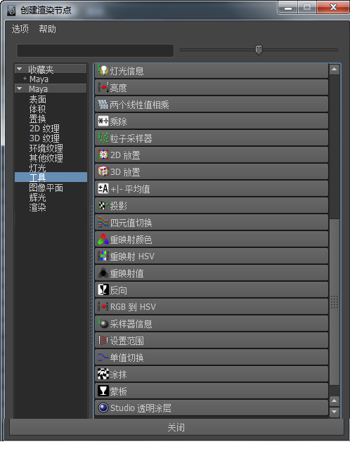
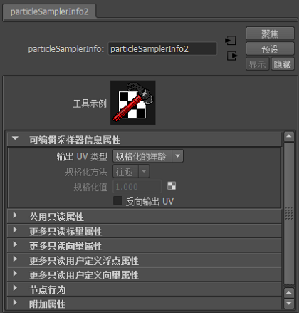
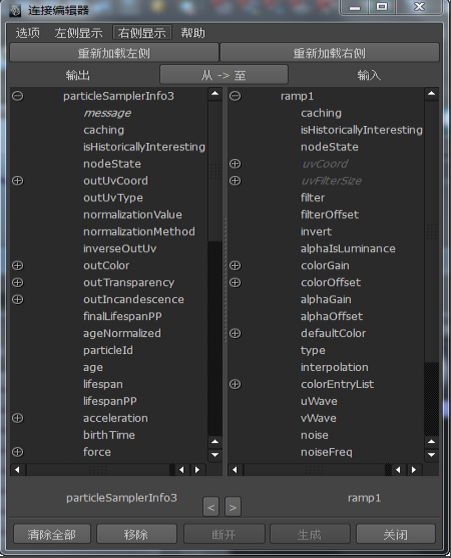

这是创建“粒子采样器信息”(Particle Sampler Info)节点的常用步骤。这些是常用步骤，我们已经在使用粒子采样器信息节点的示例中包含了几个示例。
创建“粒子采样器信息”(Particle Sampler Info)节点
- 创建粒子并设定“渲染类型”(Render Type)为“云”(Cloud)、“滴状”(Blobby)或“管状体”(Tube)。
- 确定要使用哪个粒子属性来驱动着色器属性。
- 必要时将该属性添加到粒子形状中。
- 选择粒子并显示“属性编辑器”(Attribute Editor)。单击着色器的属性编辑器选项卡，并查找希望使用粒子属性驱动的着色器属性。
- 单击该属性旁边的
 （贴图）按钮以显示“创建渲染节点”(Create Render Node)窗口。
（贴图）按钮以显示“创建渲染节点”(Create Render Node)窗口。 - 在“创建渲染节点”(Create Render Node)窗口中，在“Maya”下选择“工具”(Utilities)。 
- 在“创建渲染节点”(Create Render Node)窗口的右侧面板中，单击“粒子采样器”(Particle Sampler)。
根据用于驱动着色器属性的粒子属性的不同，Maya 将在“属性编辑器”(Attribute Editor)或“连接编辑器”(Connection Editor)中显示新“粒子采样器信息”(Particle Sampler Info)节点。
在颜色、透明度和白炽度的情况下，Maya 将在“属性编辑器”(Attribute Editor)中显示节点，并自动进行以下默认连接：
- outColor -> 颜色
- outTransparency -> 透明度
- outIncandescence -> 白炽度
其他属性显示“连接编辑器”(Connection Editor)，其中“粒子采样器信息”(Particle Sampler Info)节点在“来自”(From)侧，同时着色器在“To”(至)侧。
 - 对于使用“连接”(Connection)编辑器的属性，连接“粒子采样器信息”(Particle Sampler Info)节点属性到您希望的任意着色器节点属性。
粒子形状和“粒子采样器信息”(Particle Sampler Info)节点之间的连接是隐式的——您未实际创建该连接。所创建的唯一连接是在“粒子采样器信息”(Particle Sampler Info)节点和着色器之间。